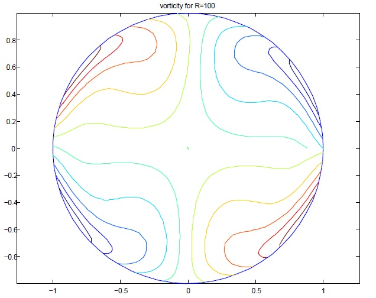

Below you find brief descriptions of some of our works in this area. For more see Publications on this topic

The FFTRR based Fast Direct Algorithms for Complex Inhomogeneous Biharmonic Problems with Applications to Incompressible Flows (Joint work with Aditi Ghosh)
We have developed analysis based fast and accurate direct algorithms for several biharmonic problems in a unit disk derived directly from the Green's functions of these problems, and compare the numerical results with the decomposition algorithms in which the biharmonic problems are first decomposed into lower order problems, most often either into two Poisson problems or into two Poisson problems and a homogeneous biharmonic problem. These algorithms have O(log N) complexity per degree of freeedom where N^2 is the total number of degrees of freedom and have very low constant behind this order estimate of the complexity. Performance of these algorithms is shown on several test problems. These algorithms are applied to solving viscous flow problems at low and moderate Reynold's numbers and numerical results are presented.
A link to the reference of the related paper will be provided after it apepars in the journal.
The FFTRR based Fast Decomposition Methods for Solving Complex Biharmonic Problems and Incompressible Flows (Joint work with Aditi Ghosh)
In this work we present several computational results on the complex biharmonic problems. First, we derive FFTRR-based fast algorithms for solving Dirichlet and Neumann type complex Poisson problems in the complex plane. These are based on the use of fast Fourier transform (FFT), analysis based recursive relations (RR) in Fourier space, and high order quadrature methods. Our second result is the application of these fast Poisson algorithms to solving four types of inhomogeneous biharmonic problems in the complex plane using decomposition methods. Lastly, we apply these high order accurate fast algorithms for the complex inhomogeneous biharmonic problems to solving Stokes flow problems at low and moderate Reynolds number. All these algorithms are inherently parallelizable though only sequential implementations have been performed. These algorithms have theoretical complexity of the order 0(log N) per grid point where N^2 is the total number of grid points in the discretization of the domain. These algorithms have many other desirable features some of which are discussed in the paper. Numerical results have been presented which show performance of these algorithms.
A brief review of some application driven fast algorithms for elliptic partial differential equations
Some application driven fast algorithms developed by the author and his collaborators for elliptic partial differential equations are briefly reviewed here. Subsequent use of the ideas behind development of these algorithms for further development of other algorithms some of which are currently in progress is briefly mentioned. Serial and parallel implementation of these algorithms and their applications to some pure and applied problems are also briefly reviewed.
On a Boundary Control Approach to Domain Embedding Methods (Joint work with Lori Badea)
In this paper, we propose a domain embedding method associated with an optimal boundary control problem, with boundary observations, to solve elliptic problems. We prove that the optimal boundary control problem has an unique solution if the controls are taken in a finite dimensional subspace of the space of the boundary conditions on the auxiliary domain. Using a controllability theorem due to J.L. Lions, we prove that the solutions of Dirichlet (or Neumann) problems can be approximated within any prescribed error, however small, by solutions of Dirichlet (or Neumann) problems in the auxiliary domain taking an appropriate subspace for such an optimal control problem We also prove that the results obtained for the interior problems hold for the exterior problems. Some numerical examples are given for both the interior and the exterior Dirichlet problems.
A Domain Embedding Method Using Optimal Distributed Control and A Fast Algorithm (Joint work with Lori Badea)
We propose a domain embedding method to solve second order elliptic problems in arbitrary two-dimensional domains. The method is based on formulating the problem as an optimal distributed control problem inside a disc in which the arbitrary domain is embedded. The optimal distributed control problem inside the disc is solved rapidly using a fast algorithm developed by Daripa and collaborators. The arbitrary domains can be simply or multiply connected and the proposed method can be applied, in principle, to a large number of elliptic problems. Numerical results obtained for Dirichlet problems associated with the Poisson equation in simply and multiply connected domains are presented. The computed solutions are found to be in good agreement with the exact solutions with moderate number of grid points in the domain.
A Numerical Study of Pulsatile Blood Flow in An Eccentric Catheterized Artery Using a Fast Algorithm (Joint work with Ranjan Dash)
The pulsatile blood flow in an eccentric catheterized artery is studied numerically by making use of an extended version of the fast algorithm of Borges and Daripa [Jour. Comput. Phys., 2001]. The mathematical model involves the usual assumptions that the arterial segment is straight, the arterial wall is rigid and impermeable, blood is an incompressible Newtonian fluid, and the flow is fully developed. The flow rate (flux) is considered as a periodic function of time (prescribed). The axial pressure gradient and velocity distribution in the eccentric catheterized artery are obtained as solutions of the problem. Through the computed results on axial pressure gradient, the increases in mean pressure gradient and frictional resistance in the artery due to catheterization are estimated. These estimates can be used to correct the error involved in the measured pressure gradients using catheters.
A Fast Algorithm to Solve the Beltrami Equation with Applications to Quasiconformal Mappings
Two algorithms are provided for the fast and accurate computation of the solution of Beltrami Equations in the complex plane in the interior of a unit disk. There are two integral operators which are fundamental in the construction of this solution. A fast algorithm to evaluate one of these integrals is given in the paper A Fast Algorithm to Solve Nonhomogeneous Cauchy-Riemann Equations in the Complex Plane. An algorithm for fast evaluation of the second integral is provided here. These algorithms are based on representation of the solution in terms of a double integral, some recursive relations in Fourier space, and fast Fourier transforms. The theoretical computational complexity of our algorithm is O(MN ln N) where M and N are the number of nodes in the circular and radial directions. We show the application of these algorithms in constructing numerical methods for quasiconformal mappings. A numerical method is provided and explored numerically for the construction of quasiconformal mappings using the Beltrami equation. In particular we show the effect of dilatations on the Jacobian of the mappings which controls what is known as the crowding phenomenon in the literature.